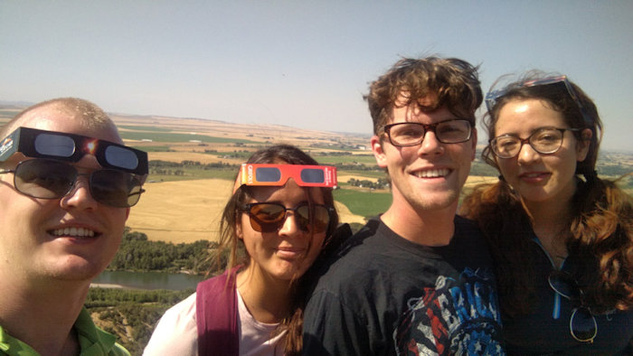

Braden Rice
Intro
As every employer knows, there is only so much information that can be represented on a one-page resume. I have made this page to be able to really represent the kind of worker that I am.
I also understand that many employers like to find their prospective applicants on various social media pages. I have made accounts on most pages but I don't use them frequently. Here are links to my LinkedIn and Facebook accounts so that you don't have to go searching for them.
I have had a very diverse educational career as I began studying for a double bachelors degree in Computer Science and Spanish at Boise State University before transfering to Brigham Young University Idaho where a double bachelors degree was not possible and I chose to study Computer Science.
I truely enjoy all of computer science. More than once, at my internship, I accidentally stayed an hour over time because I was too interested in the task that I had been given. That being said, I am especially interested in Artificial Intelligence and all of it's many applications that can make so many aspects of our lives.

I love my family. My wife and daughter are the most important things in my life. I am seeking a job where I can work in the field that I enjoy but still be able to put them first.
With my family I love my religion. As I believe that families are meant to be together forever and my religion is meant to make that possible, my religion without my family is pointless and my family without my relifion is finite. I cannot imagine one without the other.

I also have many hobbies that I enjoy. If I could live outside I would. I love all outdoor activities like camping, hiking, and swimming. I also love spending time in the gym or any kind of sport, including snow sports like skiing and snowboarding. I enjoy table games and video games as long as they are with other people. I don't like single player games.
I can also be found spending lots of free time on projects. Any time that I find something that I can do to make my life, or the lives of those around me, easier it becomes a personal project that I still enjoy and can spend hours on without even realizing that time has passed.
If you are reading this because I recently applied for a job with you, thank you for the opportunity to apply. I look forward to hearing from you and making a positive contribution to your team soon.
Resume
Education
Brigham Young University Idaho
- B.S. Computer Science – July 2020
Skills
| Programing Languages | Freameworks | Technical Tools | Development |
|---|---|---|---|
| Java | Hibernate | Git repo admin and configuration | Agile |
| C++ | Spring | Android App Development | Secure Code Development |
| Lisp | Angular | Unix Command Line | TCP Develoopment |
| haskell | Google Cloud Platform | RESTful HTTP | |
| Oracle SQL | Project Management | ||
| Python | Quality Assurance |
| Programing Skills | Other |
|---|---|
| Object Oriented | Fluent in Spanish |
| Procedural | |
| Functional | |
| Algorithms | |
| Full Stack |
Projects
Weather Balloon Tracker Android App – Project Manager
3 Months
Uses a Bluetooth connection to an amateur radio to receive location packets (APRS) and display the location of the weather balloon on a Google Map display
Smart Home Fire Alarm System – Designer
3 Months
Project proposal for a smart system in a home that can detect fires before they happen and notify residents of dangerous situations
Wage Study Design Documentation – Team Lead
3 Months
SRS and SDD for a Cloud hosted web service that helps Government entities perform wage studies and compare their positions to those of other entities of similar size
University VS Code Server – Side Project with the System Admin
2 Months
A service that runs on the BYU-I LinuxLab to allow students to connect remotely with VS Code and edit, compile and run their code
Work History
Discrete Math TA @ BYU-I
July 2019 – Present
Responsibilities
- Write and grade weekly reading quizzes
- Manage open tutor lab helping various students with the class
- Help students learn the concepts of discrete math in eLisp
Student Lead Custodian @ BYU-I
June 2019 – September 2019
Responsibilities
- Lead a team of student employees to clean and maintain university facilities
- Direct the setup of weekend campus events
Custodian @ BYU-I
April 2019 – June 2019
Responsibilities
- Work with a team of other student employees to clean and maintain university facilities
- Asist in the setup of weekend campus events
Team Member @ Wendeys
January 2019 – April 2019
Responsibilities
- Work with a team to fill a high volume of customer orders with fresh quality food in two minutes
- Help to clean and prepare the building for daily business
Software Development Intern @ The Church of Jesus Christ of Latter-day Saints
August 2018 – December 2018
Responsibilities
- Created a service that queried the project database for individual documents and all of the
associated data to speed up the debugging process from about 30 minutes to 2 minutes and presented the data in a much more readable format
- Worked with the quality assurance team to test an essential XML validation service with great attention to detail
Custodian @ BYU-I
January 2018 – July 2018
Responsibilities
- Work with a team of other student employees to clean and maintain university facilities
- Asist in the setup of weekend campus events
Sales Rep @ Petersen's Clothing
June 2016 – December 2017
Responsibilities
- Help customers prepare to spend two years in various parts of the world
- Write a program to mantain a list of customers simplifying a task that would take three weeks to ten minutes
Team Member @ Big Bun Drive-in
April 2016 – June 2016
Responsibilities
- Work with a team to prepare high volumes of food cooked to order
Sales Rep @ Deseret Industries
January 2016 – April 2016
Responsibilities
- Keep the sales floor stocked with large donated items
- Help customers find different items that fit their various needs
Volunter representitive @ The Church of Jesus Christ of Latter-day Saints
December 2013 – November 2015
Responsibilities
- Work every day to find people to serve
- Mantain my own schedule to set up apointments with different people
Electritian's Apprentice @ Anderson & Wood Construction
August 2013 – November 2013
- Read industrial schematics and apply them to build high and low voltage electrical systems